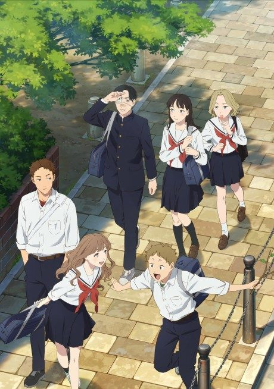

Kaguya-sama: Love Is War
かぐや様は告らせたい
After the anime, read the manga from Chapter 152.
8.3AniList score
—Animeter, no votes yet
41episodes, 4 seasons
Anime finished. Where does the manga pick up?
Start at Chapter152
Start at Chapter 152, around Volume 16. The 2025 TV special only picks a few later moments, so it doesn't replace the manga.
1138151281 end
Seasons 1–3The First Kiss Never EndsStart reading here
More like Kaguya-sama: Love Is War
 Manga Vol. 47.5
Manga Vol. 47.5
 Done7.7
Done7.7
 Unclear7.9
Unclear7.9
 Manga Ch. 667.6
Manga Ch. 667.6
 Unclear7.7
Unclear7.7

Manga Ch. 357.2